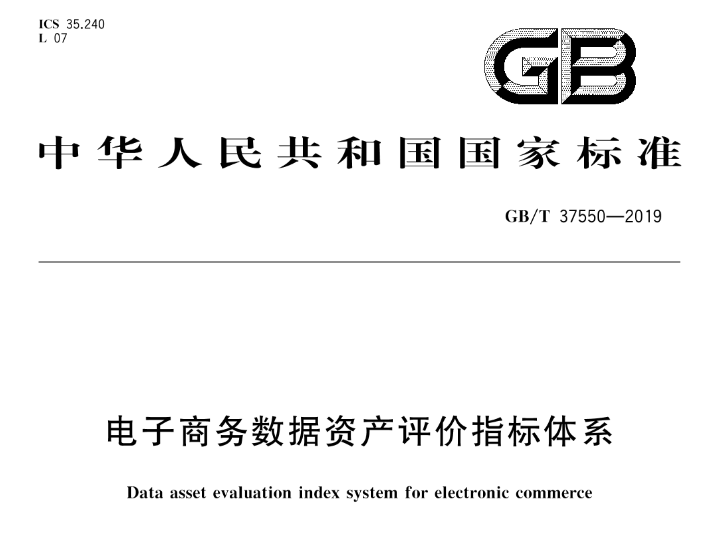
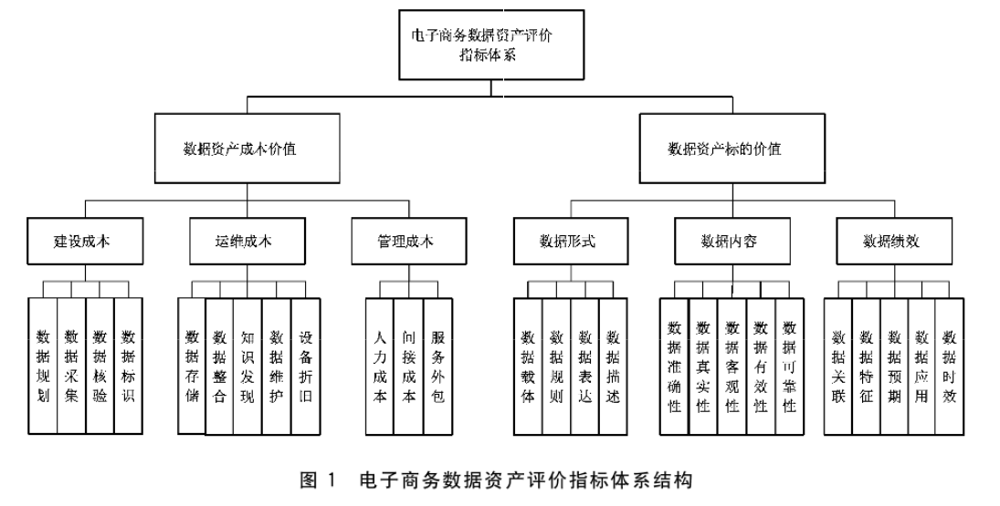

一 前言
经过8个月的意见征求，财政部于8月21日正式对外发布《企业数据资源相关会计处理暂行规定》，并自2024年1月1日开始施行。
《规定》要求，企业在编制资产负债表时，应当根据重要性原则并结合本企业的实际情况：
- 在“存货”项目下增设“其中：数据资源”项目，反映资产负债表日确认为存货的数据资源的期末账面价值；
- 在“无形资产”项目下增设“其中：数据资源”项目，反映资产负债表日确认为无形资产的数据资源的期末账面价值；
- 在“开发支出”项目下增设“其中：数据资源”项目，反映资产负债表日正在进行数据资源研究开发项目满足资本化条件的支出金额。
二 数据作为资产负债表带来的变化
数据资产入表政策落地意味着数据计量方式更进一步，数据资产可以成为企业实实在在的资产。
可能过去在当期计量的成本和费用能够在资产负债表形成资产，这一方面增厚了企业资产，完善了数据资产计量体系；另一方面也激励企业更多参与到数据产业中来，以此来提升数据交易、数据服务购买的活跃度。
有助于弥补现有会计准则在数据资产计量和披露上的缺失，为数据资产提供法律保护和交易基础，改善数据资产监管和防控数据资产风险，促进数据资源流通和开发利用。
三 数据资产可能的挑战
数据资产成本该如何划分？
如果数据被视为一种资产，那么获取或构建这种资产就必须有相应的成本。这意味着公司必须重视收集、提炼和丰富数据所花费的时间，以及用于数据资产开发的人员招聘成本、存储、计算成本和其他成本因素。到目前为止，由于其生命周期相关的复杂因素，这个过程仍然具有挑战性。数据资产是否需要折旧？
当有形资产老化时，它们就会失去价值。因此，必须实施适用的折旧政策以反映其使用寿命。而数据资产随着时间的推移，数据资产是增值还是贬值很难确定，数据预测其使用寿命无疑更具挑战性。法规遵守是资产还是负债？
数据一般来说是资产，但这些数据必须遵守法规，不合规的数据将面临无数风险，这一个治理过程也许需要花费大量的成本，使得这类数据是资产还是负债面临不确定性。数据投资回报如何确定？
对数据投资回报（公司投资数据并将其用于业务时获得的收入）的估计可能非常模糊，或很难计算。异构数据难有统一的估值方法
数据异构性，独特性意味着市场估值方法并不总是合适的，如何确定资产的估值非常具有挑战。
四 数据资产的估值方法
数据资产作为资产负债表中的无形资产，之前许多组织要么忽视了数据估值，要么是在数据估值方面苦苦挣扎，数据资产并没有在实践中形成一套标准化、简便可以的估计方法。常用的几种估值方法，各有利弊。
（1）基于成本
价值是根据创建资产的成本确定的。此方法对于数据可能不精确，因为数据通常是作为其他业务流程的中间产品创建的。可以根据存储和其他数据基础设施的成本来评估成本，但这不会阻止数据的全部价值，也不会揭示截然不同的数据源之间的价值差异。（2）基于市场
价值是根据市场上可比商品的市场价格来定义的。在大多数情况下，不存在可比较的数据源。市场需要一个可靠且一致的概念来解释什么使数据更有价值或更不有价值。此外，即使存在完善的数据市场，数据源也很少具有相同的内容或质量。（3）基于收入
价值是根据对资产未来现金流量的估计来定义的。该方法可能适合评估数据。基于收入的评估是唯一对数据有意义的方法。然而，其独特的特性可能使其执行起来有些困难。
数据资产评估是否有统一标准？
作为在线数据交易过程中数据资产商品化、证券化的评价标准和依据，早在2019年国家标准化管理委员会就发布了《电子商务数据资产评价指标体系》GB/T 37550-2019，从数据资产成本价值和数据资产标的价值给出了具体的评价指标。但这只能是一个评价的指标参考，但并没有给出指标与价格之间的对应关系，与数据资产估值还有一定的距离。

